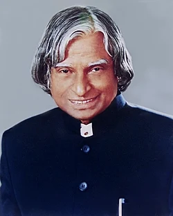

Avul Pakir Jainulabdeen Abdul Kalam was an Indian aerospace scientist and statesman who served as the 11th President of India from 2002 to 2007. He played a leading role in India's missile and nuclear weapons programs, earning him the title "Missile Man of India." He inspired millions of students through his books, speeches, and dedication to science, education, and national development.